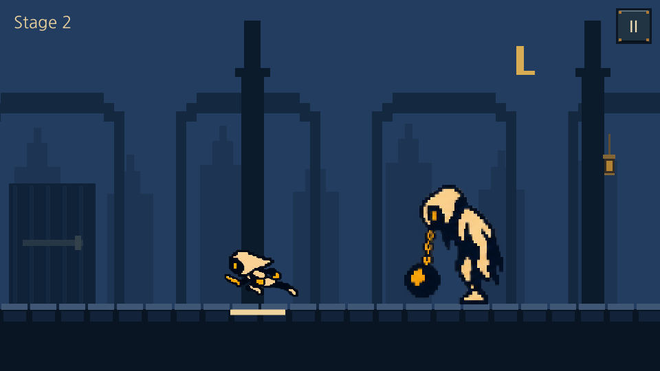
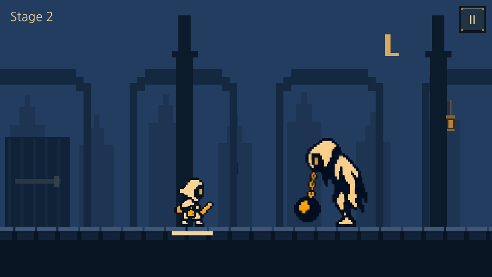

LAST BELL · APPROVED RUN · 2026.10.21
승인한 달리기를 실제 게임에 적용
원본 8자세를 그대로 사용했습니다. 각 자세의 유지 시간은 40 · 40 · 60 · 60 · 40 · 40 · 60 · 60ms, 한 주기는400ms입니다. 이동은1,920 기획px / 2초입니다.
실행본을20ms 간격(50fps)으로 캡처한 재생입니다. 애니메이션 자체를50개의 자세로 늘린 것이 아닙니다. 실제8자세의40/60ms 박자를100장의 캡처에서 확인했습니다.

왼쪽 보기 · 공통 피벗과 크기 유지
도착 후 Idle · 발 기준점과 스케일 유지승인한 원본 모션 · 검증 기록 · 기획 보드